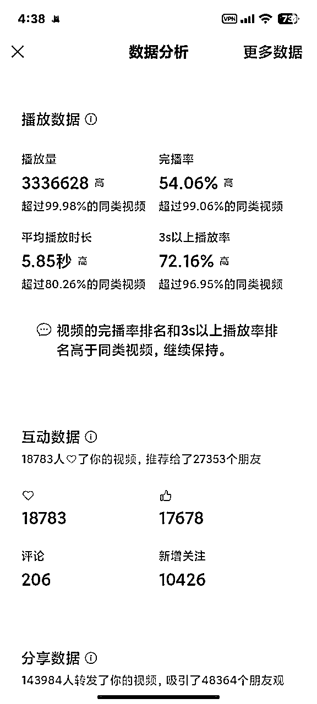
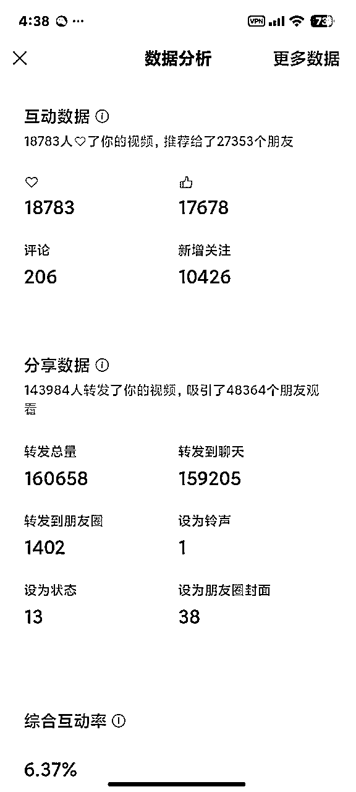
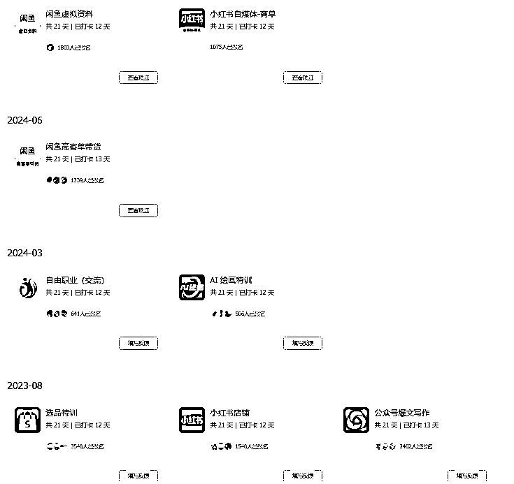

来源：https://oamc0cnyp8t.feishu.cn/docx/WvRadCF36oxH20xYj9DcCmA2nNd
大家好！我是凯西。3月参加了视频号直播航海，应宝芙邀请，今天我来详细分享我的航海收获，希望能帮助到对直播航海感兴趣的小伙伴们。
关于我：
①生财第3年老会员
②做过5年私域社群运营，包括教培、大健康、知识付费
③单次航海赚回过生财门票
④目前正在探索长期可持续的自由职业中
这次航海最大的收获？
作为一个剪辑小白，我在航海期间坚持日更，结果竟然剪出了一个百万爆款视频，并且账号涨粉1万+！🎉


总结下我的这段航海，就是不断踩坑，不断重塑，而在此过程中，我也积累了很多经验，希望和大家分享：
有人问，参与航海最重要的是什么？我的回答一直是：态度，唯有全力以赴，方有收获。
我参与航海的次数不算少，比如小红书商单、小红书店铺、爆文写作、闲鱼虚拟商品和高客单，也就闲鱼上搞到一个生财门票钱，其余大多是“陪跑”。贴上我报过的航海截图：

从打卡次数就可以看出来哈哈哈哈，因为不够认真，自然也就没什么结果。这次，我吸取了教训，全身心投入。
3月航海，我同时报名了两个实战项目。当时正处于职业空窗期，所以决定：这次航海，一定要认真对待！ （对，心态上真的要重视！想要拿到结果，态度必须先摆正），事实证明态度决定一切。
我是怎么重视的呢？以下三步
1）群消息置顶、关注
不论是通知还是其他人提问，别人的问题你也会遇到，或早或晚的问题。
2）直播第一时间参加
参加直播不只是获取信息，证明自己在心里把这个航海的优先级前置了。
3）遇到卡点多#举手
不要不好意思问，看重视的第一步，你的问题别人也会遇到的，你问了不只是解决你的问题，还顺便帮圈友也解决了问题。
要想远航，态度便是手中的船桨，决定着续航的动力；而选对赛道，恰似择定正确的航向，往往比一味划桨更能决定抵达的远方。
新手期很容易犯的错误就是“这山看着那山高”，总想着去挑战一个最高、最难的山头，结果往往是从山脚就开始耗尽心力，累人又累心。当我意识到这个问题后，果断选择了手册里推荐且我自己也感兴趣的赛道，然后就直接开干了！幸运的是，这也成为了我做出小成绩的赛道。
我还记得教练曾说过（这是我的理解版），新手选赛道就应该去“红海”！竞争再激烈，也不差我们这些“小喽啰”一口汤喝。相反，在红海赛道，你反而最容易获得正反馈，因为用户基数大，更容易有数据反馈。
所以建议大家：如果已有热爱且适配的赛道，无疑是幸运的；但如果暂时没有明确方向，不妨大胆试水红海项目——这类领域往往具备成熟的商业模式与清晰的入局路径，试错成本更低、确定性更强。以我本次参与的视频号直播为例，流量红利仍在释放、变现路径清晰可见，只要在细分场景中找到差异化切口（如垂类选品、人设深耕），一样能挖掘到属于自己的增长机会，下面，我和大家讨论下，如何形成自己的差异化切口。
如何让自己的视频内容突出，一定要2手抓——选对标，抓“异常值”。
拿本项目举例，学习和复刻爆款可以从其他平台入手，但最关键的还是要多刷视频号本身！因为每个平台的调性不同，用户偏好也略有差异。所以选取对标的时候，一定以自己准备深耕的平台为准。
手册里推荐的目标人群是 50+的中老年人。一开始我非常疑惑，心想难道就不能卖给二三十岁的年轻人吗？事实证明，确实不太行。因为视频号的主力人群就是二三线的，偏中老年用户。所以，一定要尊重平台的用户画像。
因此，务必多刷视频号，关注那些“异常值”！
那“异常值”怎么看呢？
就拿我来说，我选择了绿植赛道。一开始我每天去快手和抖音上找爆款对标，但那些都是实拍真人出镜的视频，我一个剪辑小白根本无从模仿，前期找素材就耗费大量时间，非常心累。而且数字人流量表现也不理想。
于是我一边继续更新从其他平台复刻的视频，一边坚持刷视频号，天天搜索关键词。结果真的让我找到了一个“异常值”——就是那种字大、音乐是鸟语花香的视频，它们制作简单易模仿，数据却异常好！这简直给我打开了新世界的大门！
给大家看下这个视频有多简单：就这些字，加个字体出来的特效，再加个背景音乐。完事了。
直接照着这个模式，我陆续出了两个爆款：一个 10万+ 的播放量，另一个在航海期间达到了 100万+ 的播放量，到现在已经突破 340万了！账号也因此涨粉 1万+，视频带货 33单。
以上，虽然说起来容易，但实际摸索过程中还是很煎熬的。
毕竟咱也不能预测搬运过来的爆款就会爆，不论整个航海拿没拿到预期的结果，本事是肯定涨了的。我现在剪视频就非常快了！什么蒙版、定格、转场、特效、九宫格的。统统拿下！
放心做吧，总会有所收获的！剪辑的本事不白学。
祝看到帖子的小伙伴爆单，旗开得胜！